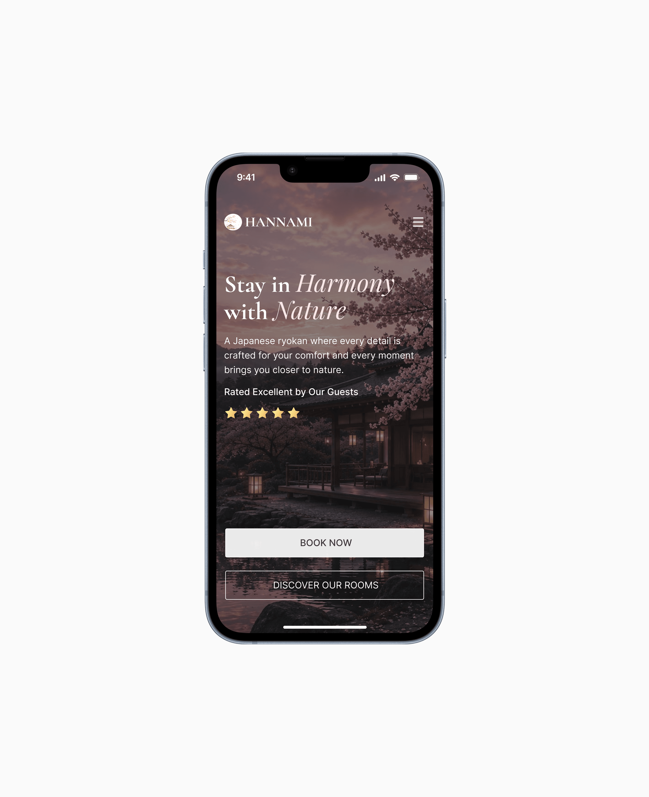

Hannami Ryokan Website
Elegant website concept for a traditional Japanese ryokan focused on serene visuals, clear booking flow and storytelling.


Hannami Ryokan Website Concept
Overview
Hannami is a concept website designed for a traditional Japanese ryokan that blends luxury hospitality with the beauty of nature. The goal was to create a calm and immersive digital experience that reflects the peaceful atmosphere guests can expect during their stay.
Project Goal
The objective was to design a visually engaging landing page that:
- Communicates the elegance of a traditional Japanese ryokan
- Creates an emotional connection through imagery
- Encourages users to explore accommodations and make reservations
- Maintains a clean and modern user experience
Target Audience
- Luxury travelers
- Couples seeking a peaceful getaway
- International tourists interested in Japanese culture
- Guests looking for premium hospitality experiences
Design Process
Research & Inspiration: The visual direction was inspired by traditional Japanese architecture, nature-focused hospitality experiences, luxury hotel websites, and minimalist design principles. The focus was on creating a sense of tranquility, warmth and authenticity.
Visual Design
Color Palette: Soft, natural tones were selected to create a relaxing atmosphere: warm beige, deep brown, soft pink cherry blossom accents, and neutral backgrounds.
Typography: Elegant serif typography was used for headlines to communicate luxury and tradition, while clean sans-serif text improves readability throughout the interface.
Key Features
The landing page opens with a full-width visual showcasing the ryokan surrounded by cherry blossoms. The section includes a clear value proposition, call-to-action button, navigation menu and guest rating indicator.
Challenges
One of the main challenges was balancing traditional Japanese aesthetics with modern web design principles. The solution was to combine elegant typography, minimal interface elements and immersive photography while maintaining a clean and intuitive layout.
Outcome
The final design successfully captures the peaceful and luxurious atmosphere of a Japanese ryokan while providing users with a modern and user-friendly booking experience.